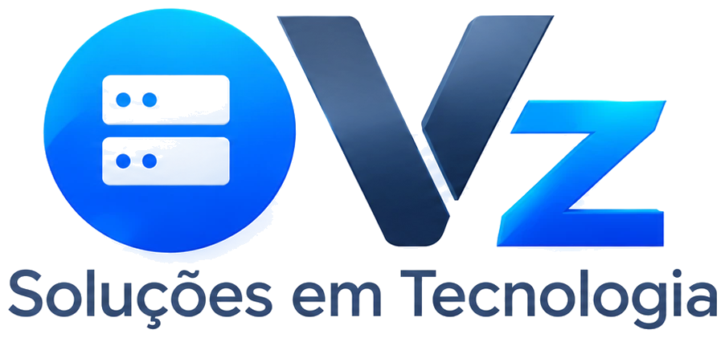

Desenvolvimento e manutenção de SaaS
Criamos o seu software como serviço do zero ou assumimos o que já está no ar: novas funcionalidades, correções, atualizações, monitoramento e suporte contínuo, para o produto crescer sem parar.

Software house · Consultoria
Do app no celular ao sistema da sua empresa: projetamos, desenvolvemos e mantemos software sob medida.
Quem somos
Nossa base foi forjada nos bastidores do desenvolvimento web, em agências de marketing. Foi ali que entregamos nosso primeiro sistema em produção: uma ferramenta de controle de jobs que otimizou os fluxos internos e mostrou, na prática, o impacto de um software bem estruturado na rotina de um negócio.
Depois vieram os projetos de grande porte: sistemas e análise de dados para o setor público, com rigor de arquitetura, escala e segurança; fábricas de software, com sistemas legados e clientes de expressão nacional; e a área fiscal, gerenciando emissores de notas fiscais, onde precisão e conformidade não são opcionais.
Hoje somos uma fábrica de software e consultoria especializada, em Jundiaí - SP. Unimos essa bagagem a novas tecnologias, tendências globais e inteligência artificial para transformar ideias em sistemas e aplicativos robustos, escaláveis e prontos para o futuro.
Cada projeto nasce de um problema real do seu negócio, e a gente escolhe a tecnologia certa para resolvê-lo.
Criamos o seu software como serviço do zero ou assumimos o que já está no ar: novas funcionalidades, correções, atualizações, monitoramento e suporte contínuo, para o produto crescer sem parar.
Apps Android e iOS com uma base de código só, publicados nas lojas e integrados ao seu sistema.
Painéis, ERPs e plataformas feitos para o seu processo, e não o contrário.
Conectamos ERPs, sistemas contábeis, WhatsApp e serviços de terceiros para os dados fluírem sem retrabalho.
Tarefas repetitivas viram rotinas automáticas: relatórios, conciliações, cadastros e notificações.
Sites institucionais, landing pages e portais rápidos, bonitos e prontos para converter.
Recursos de IA dentro do seu sistema ou app: assistentes, leitura de documentos e respostas automáticas.
Consultoria
Uma consultoria prática para empresas que querem usar tecnologia de verdade, sem modismo e sem desperdício.
Onde a automação traz retorno no seu negócio.
Um plano por etapas, com prioridades, custos e prazos.
A ferramenta certa antes de investir em desenvolvimento.
Infraestrutura, redes, inventário e suporte para a equipe.
Seu time aproveitando as novas ferramentas no dia a dia, com segurança.


Cases
Sistemas e apps que desenvolvemos e que estão rodando de verdade. Escolha um case na lista ou passe o mouse para girar o aparelho.
SISTEMA WMS
Endereço: A-12-03
Produto: 7891020
Qtd.: 0024
Pressione ENTEmulador Telnet e SSH para Android: a ponte entre o seu sistema legado (WMS, ERP) e os coletores modernos, como Zebra, Honeywell e Urovo. Teclado virtual personalizável e licença perpétua.
Conhecer o ScanTE ↗Um navegador empresarial: a equipe acessa os sistemas web da empresa de forma segura e personalizada, direto no coletor ou no celular da operação.
Para empresas: o relay segura a conexão dos dispositivos quando a rede cai, e ninguém perde o trabalho. Quando o sinal volta, o aparelho continua exatamente de onde parou.
Plataforma de estudos com inteligência artificial, em produção e com mais de 200 acessos por dia. Trilhas e fases no estilo Duolingo, com conteúdo e questões gerados e explicados por IA: nosso case de desenvolvimento com IA.
Sistema de atendimento com uma inteligência artificial treinada para escritórios de contabilidade. Integrada a outros sistemas, ela consulta os dados e atende sozinha os clientes do escritório.
Um atendente com inteligência artificial treinado para o atendimento e para resolver dúvidas pelo WhatsApp, com o contexto do seu negócio, a qualquer hora.
X-BurgerPão, carne e queijo
R$ 24,90Batata fritaPorção média
R$ 18,00RefrigeranteLata 350 ml
R$ 6,90O cliente escolhe os produtos no cardápio digital e faz o pedido pelo celular. A loja recebe tudo organizado, pronto para separar e entregar.
Conte a ideia. A gente desenha, desenvolve e publica nas lojas.
Tirar a ideia do papelSoluções já testadas em operação real, que a gente adapta à sua marca e ao seu processo.
Inventário de equipamentos, responsáveis, movimentações e manutenção, com histórico completo.
Pedir demonstração →Loja online, pedidos pelo celular e painel para acompanhar cada entrega.
Pedir demonstração →Assistente que responde clientes no WhatsApp, agenda horários e passa para um humano quando precisa.
Pedir demonstração →Entendemos o problema, o processo e o resultado esperado.
Você vê e testa as telas antes de começarmos a programar.
Entregas curtas e frequentes, com você acompanhando cada etapa.
Publicação, treinamento e evolução contínua do sistema.
Conte o que você precisa. Vamos entender o cenário e indicar o próximo passo, sem compromisso.
VZ Soluções em Tecnologia · Jundiaí - SP · CNPJ 61.274.889/0001-90